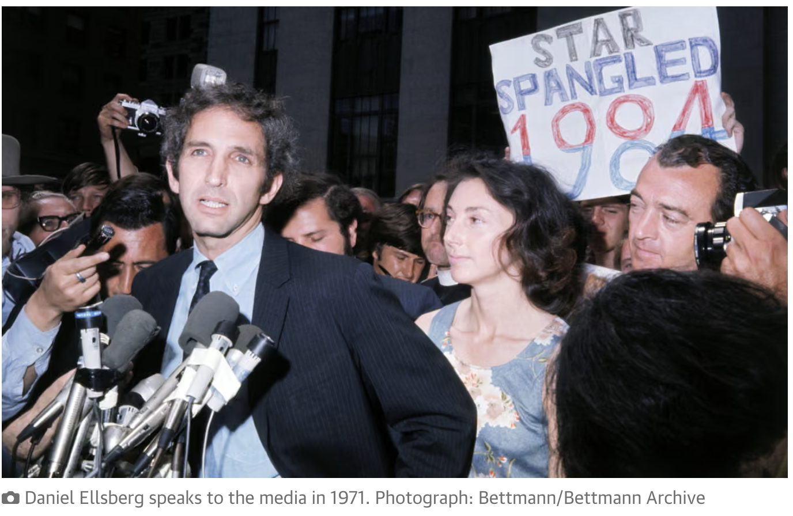

Recent whistleblowers and the historical ones
- John Kiriakou
CIA interrogation program (including waterboarding)
Helped confirm the existence of torture practices
-
Edward Snowden
Mass surveillance programs run by the National Security Agency
Showed that the U.S. was collecting vast amounts of phone and internet data globally
-
Chelsea Manning
Leaked hundreds of thousands of documents to WikiLeaks
Included battlefield reports, diplomatic cables, and the “Collateral Murder” video

Fig.1. Daniel Ellsberg speaks to the media in 1971
-
Daniel Ellsberg
While employed by the RAND Corporation, he precipitated a national political controversy in 1971
when he released the Pentagon Papers,
a top-secret Pentagon study of U.S. government decision-making in relation to the Vietnam War,
to The New York Times, The Washington Post, and other newspapers. Chicago, Illinois, U.S.